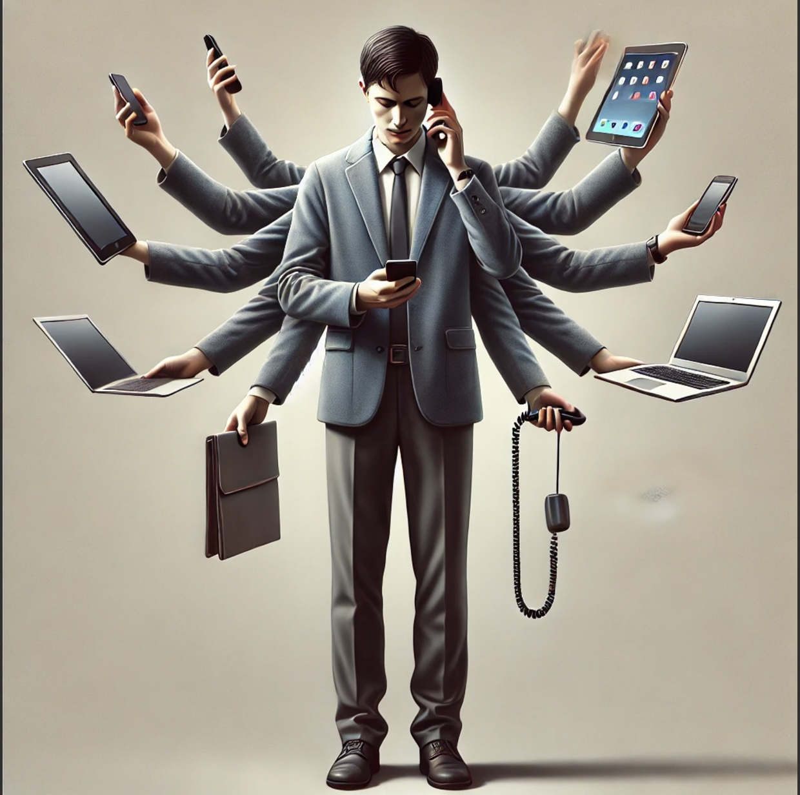
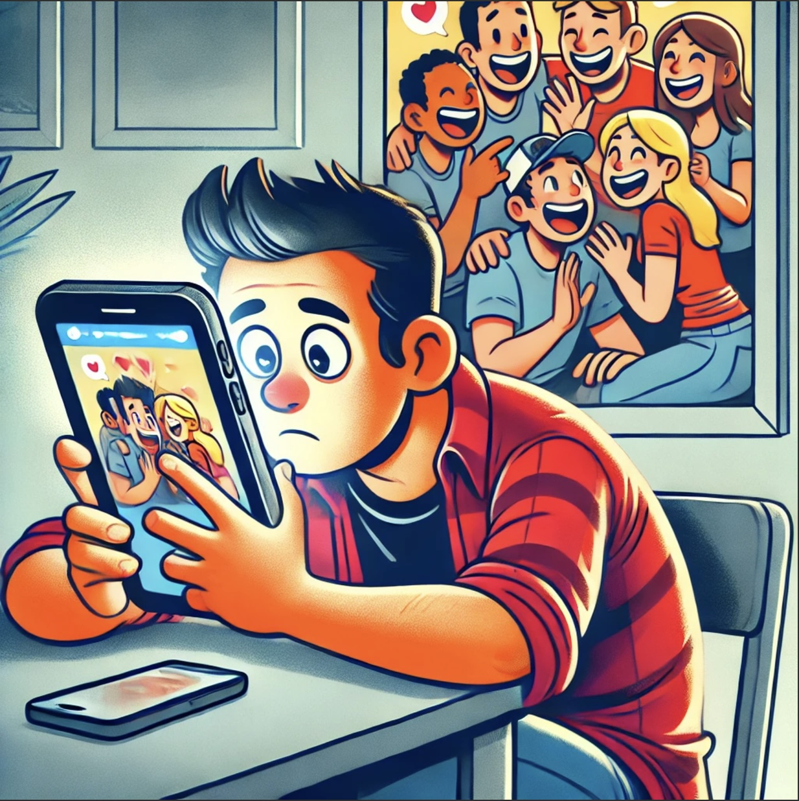

The dual nature of social media necessitates constant vigilance due to its mix of advantages and challenges. While these platforms enhance communication and provide valuable information, there's a significant risk of becoming overly dependent on digital interactions, potentially leading to negative lifestyle habits. Additionally, the rapid integration of social media into daily life is both impressive and concerning. Since the early 2000s, the percentage of U.S. adults using social media has surged dramatically, from a mere five percent to approximately seventy percent, largely due to the proliferation of various platforms that weren't available two decades ago.

Jeffrey Hall, Ph.D. and director of the Relationships and Technology Lab at the University of Kansas, highlights a significant social concern: social media may be diminishing our social skills, affecting both young people and adults. In his study, Hall had participants log their daily activities, comparing periods of social media use with periods of abstention. Surprisingly, he discovered that abstaining from social media did not lead to increased face-to-face interactions with close social ties. This suggests that the various communication methods available—such as texting, emailing, calling, and meeting in person—serve different roles, and eliminating one doesn't necessarily enhance the others. This underscores the importance of maintaining genuine relationships and mindful use of social media to capitalize on its benefits without letting it erode the quality of our personal interactions.

Social media has undeniably reshaped how we communicate and connect with others, this is why it is imperative that we balance this new from of communication by always being intentional. The exponential growth of social media platforms has redefined how with socially interact but we should not replace this new form of connection to replace meaningful face to face connections. We have been forced to navigate a world changed by the digital age which is why it is critical that we recognize the importance of maintaining genuine relationsiips and reduce or attachments on virtual communication. These tools should be meet with mindfulness in order for use to capitilize on the benefits of social media without allowing it to erode the quality and quantity of our personal interactions and social acumen.